BOOK XI. PROPOSITIONS.¶
Proposition XI.1
A part of a straight line cannot be in the plane of reference and a part in a plane more elevated.
Proposition XI.2
If two straight lines cut one another, they are in one plane, and every triangle is in one plane.
Proposition XI.3
If two planes cut one another, their common section is a straight line.
Proposition XI.4
If a straight line be set up at right angles to two straight lines which cut one another, at their common point of section, it will also be at right angles to the plane through them.
Proposition XI.5
If a straight line be set up at right angles to three straight lines which meet one another, at their common point of section, the three straight lines are in one plane.
Proposition XI.6
If two straight lines be at right angles to the same plane, the straight lines will be parallel.
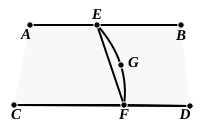
Proposition XI.7
If two straight lines be parallel and points be taken at random on each of them, the straight line joining the points is in the same plane with the parallel straight lines.
Proposition XI.8
If two straight lines be parallel, and one of them be at right angles to any plane, the remaining one will also be at right angles to the same plane.
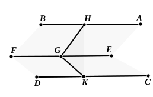
Proposition XI.9
Straight lines which are parallel to the same straight line and are not in the same plane with it are also parallel to one another.
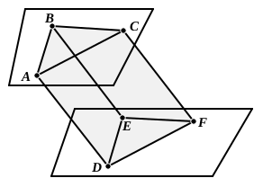
Proposition XI.10
If two straight lines meeting one another be parallel to two straight lines meeting one another not in the same plane, they will contain equal angles.
Proposition XI.11
From a given elevated point to draw a straight line perpendicular to a given plane.
Proposition XI.12
To set up a straight line at right angles to a given plane from a given point in it.
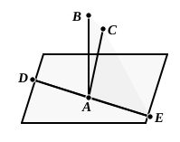
Proposition XI.13
From the same point two straight lines cannot be set up at right angles to the same plane on the same side.
Proposition XI.14
Planes to which the same straight line is at right angles will be parallel.
Proposition XI.15
If two straight lines meeting one another be parallel to two straight lines meeting one another, not being in the same plane, the planes through them are parallel.
Proposition XI.16
If two parallel planes be cut by any plane, their common sections are parallel.
Proposition XI.17
If two straight lines be cut by parallel planes, they will be cut in the same ratios.
Proposition XI.18
If a straight line be at right angles to any plane, all the planes through it will also be at right angles to the same plane.
Proposition XI.19
If two planes which cut one another be at right angles to any plane, their common section will also be at right angles to the same plane.
Proposition XI.20
If a solid angle be contained by three plane angles, any two, taken together in any manner, are greater than the remaining one.
Proposition XI.21
Any solid angle is contained by plane angles less than four right angles.
Proposition XI.22
If there be three plane angles of which two, taken together in any manner, are greater than the remaining one, and they are contained by equal straight lines, it is possible to construct a triangle out of the straight lines joining the extremities of the equal straight lines.
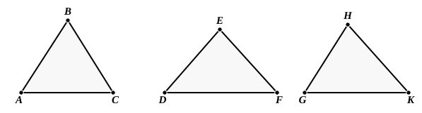
Proposition XI.23
To construct a solid angle out of three plane angles two of which, taken together in any manner, are greater than the remaining one: thus the three angles must be less than four right angles.
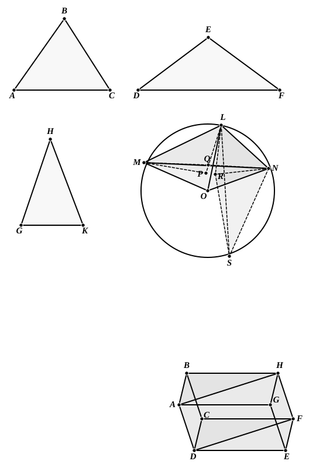
Proposition XI.24
If a solid be contained by parallel planes, the opposite planes in it are equal and parallelogrammic.
Proposition XI.25
If a parallelepipedal solid be cut by a plane which is parallel to the opposite planes, then, as the base is to the base, so will the solid be to the solid.
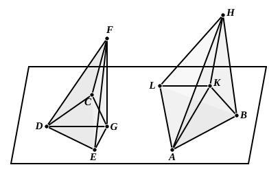
Proposition XI.26
On a given straight line, and at a given point on it, to construct a solid angle equal to a given solid angle.
Proposition XI.27
On a given straight line to describe a parallelepipedal solid similar and similarly situated to a given parallelepipedal solid.
Proposition XI.28
If a parallelepipedal solid be cut by a plane through the diagonals of the opposite planes, the solid will be bisected by the plane.
Proposition XI.29
Parallelepipedal solids which are on the same base and of the same height, and in which the extremities of the sides which stand up are on the same straight lines, are equal to one another.
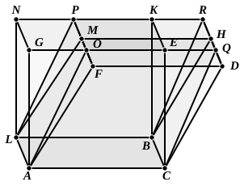
Proposition XI.30
Parallelepipedal solids which are on the same base and of the same height, and in which the extremities of the sides which stand up are not on the same straight lines, are equal to one another.
Proposition XI.31
Parallelepipedal solids which are on equal bases and of the same height are equal to one another.
Proposition XI.32
Parallelepipedal solids which are of the same height are to one another as their bases.
Proposition XI.33
Similar parallelepipedal solids are to one another in the triplicate ratio of their corresponding sides.
Proposition XI.34
In equal parallelepipedal solids the bases are reciprocally proportional to the heights; and those parallelepipedal solids in which the bases are reciprocally proportional to the heights are equal.
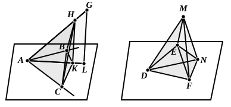
Proposition XI.35
If there be two equal plane angles, and on their vertices there be set up elevated straight lines containing equal angles with the original straight lines respectively, if on the elevated straight lines points be taken at random and perpendiculars be drawn from them to the planes in which the original angles are, and if from the points so arising in the planes straight lines be joined to the vertices of the original angles, they will contain, with the elevated straight lines, equal angles.
Proposition XI.36
If three straight lines be proportional, the parallelepipedal solid formed out of the three is equal to the parallelepipedal solid on the mean which is equilateral, but equiangular with the aforesaid solid.
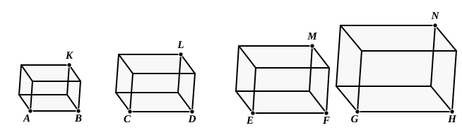
Proposition XI.37
If four straight lines be proportional, the parallelepipedal solids on them which are similar and similarly described will also be proportional; and, if the parallelepipedal solids on them which are similar and similarly described be proportional, the straight lines will themselves also be proportional.
Proposition XI.38
If the sides of the opposite planes of a cube be bisected, and planes be carried through the points of section, the common section of the planes and the diameter of the cube bisect one another.
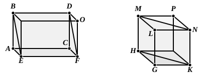
Proposition XI.39
If there be two prisms of equal height, and one have a parallelogram as base and the other a triangle, and if the parallelogram be double of the triangle, the prisms will be equal.